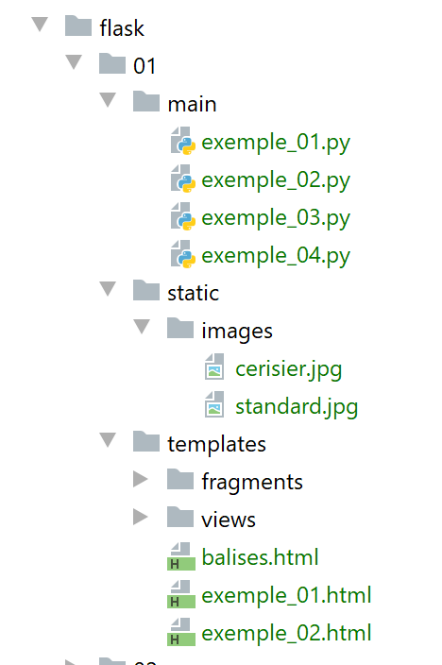
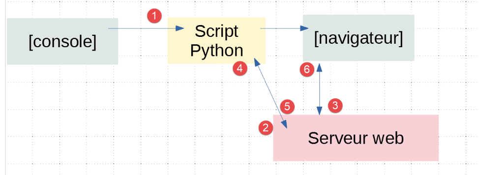
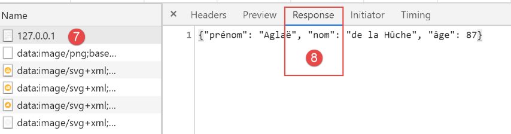
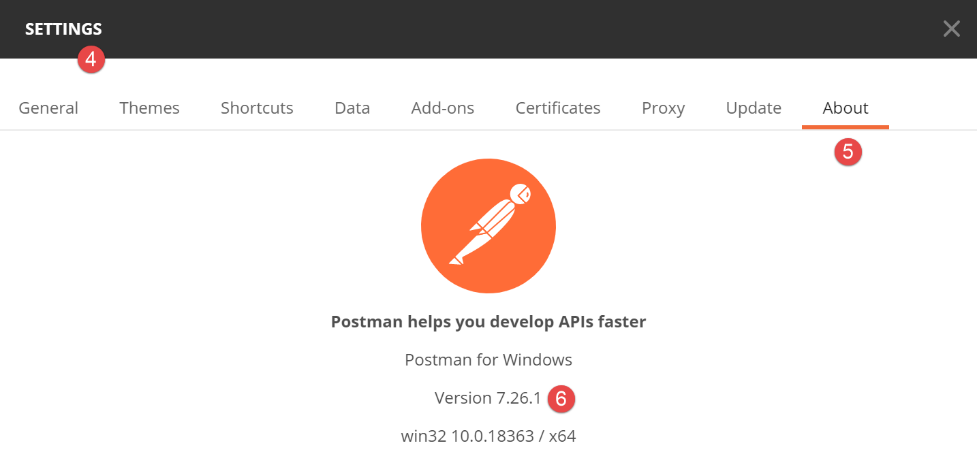
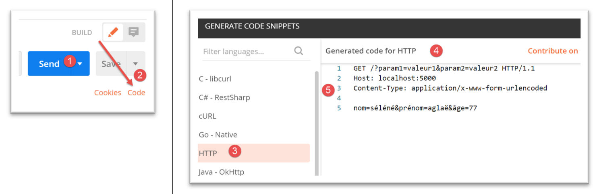
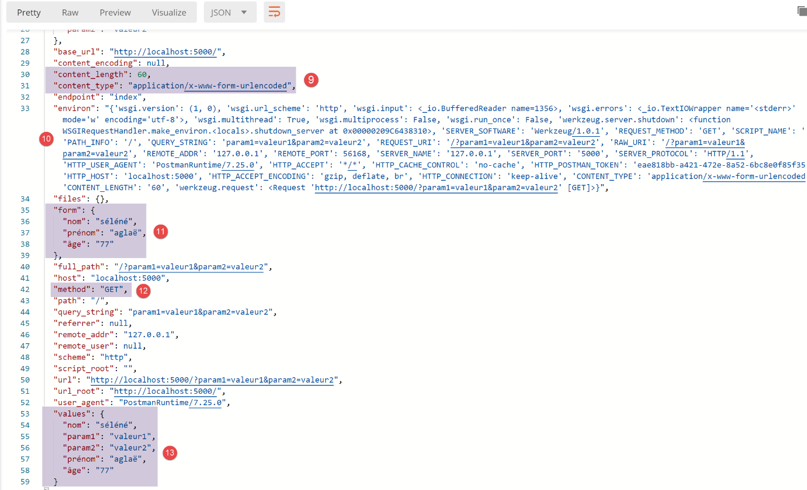
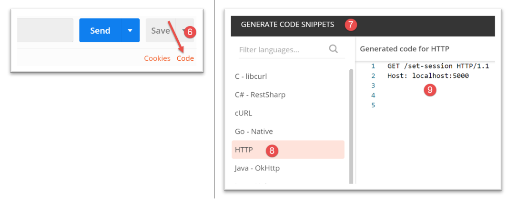
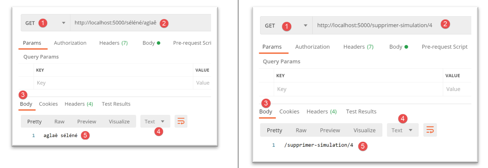

22. خدمات الويب باستخدام إطار عمل Flask
نعني بخدمة الويب هنا أي تطبيق ويب يقدم البيانات الأولية التي يستهلكها العميل، وغالبًا ما يكون نصًا برمجيًا للوحدة في الأمثلة التالية. لا نهتم بتقنية معينة، مثل REST (REpresentational State Transfer) أو SOAP (Simple Object Access Protocol)، التي تقدم بيانات أولية بشكل أو بآخر بتنسيق محدد جيدًا. تُرجع REST JSON، بينما تُرجع SOAP XML. تصف كل من هذه التقنيات بدقة كيفية قيام العميل بالاستعلام عن الخادم والتنسيق الذي يجب أن تتخذه استجابة الخادم. في هذه الدورة، سنكون أكثر مرونة فيما يتعلق بطبيعة طلب العميل واستجابة الخادم. ومع ذلك، فإن البرامج النصية المكتوبة والأدوات المستخدمة مشابهة لتلك الخاصة بتقنية REST.
22.1. مقدمة
يمكن تنفيذ البرامج النصية لـ Python بواسطة خادم ويب. يصبح مثل هذا البرنامج النصي برنامج خادم قادرًا على خدمة عملاء متعددين. من منظور العميل، فإن استدعاء خدمة ويب يعادل طلب عنوان URL لتلك الخدمة. يمكن كتابة العميل بأي لغة، بما في ذلك Python. في الحالة الأخيرة، نستخدم وظائف الإنترنت التي تناولناها للتو. نحتاج أيضًا إلى معرفة كيفية "التواصل" مع خدمة الويب، أي فهم بروتوكول HTTP للتواصل بين خادم الويب وعملائه. كان هذا هو الغرض من القسم الخاص ببروتوكول HTTP. سمحت لنا برامج الويب الموصوفة في هذا الجزء من الدورة باستكشاف جزء من بروتوكول HTTP.

في أبسط أشكالها، تتم عمليات التبادل بين العميل والخادم على النحو التالي:
- يفتح العميل اتصالاً بالمنفذ 80 على خادم الويب؛
- يقدم طلبًا للحصول على مستند؛
- يرسل خادم الويب المستند المطلوب ويغلق الاتصال؛
- ثم يغلق العميل الاتصال؛
يمكن أن يكون المستند من أنواع مختلفة: نص بتنسيق HTML، صورة، فيديو، إلخ. يمكن أن يكون مستندًا موجودًا (مستند ثابت) أو مستندًا تم إنشاؤه على الفور بواسطة برنامج نصي (مستند ديناميكي). في الحالة الأخيرة، نشير إلى برمجة الويب. يمكن كتابة البرنامج النصي لإنشاء المستندات ديناميكيًا بلغات مختلفة: PHP، Python، Perl، Java، Ruby، C#، VB.NET، إلخ.
فيما يلي، سنستخدم نصوص Python لإنشاء مستندات نصية ديناميكيًا.

- في [1]، يقوم العميل بإنشاء اتصال مع الخادم، ويطلب برنامج نصي Python، وقد يرسل أو لا يرسل معلمات إلى ذلك البرنامج النصي؛
- في [3]، يقوم خادم الويب بتنفيذ البرنامج النصي Python باستخدام مترجم Python. يقوم البرنامج النصي بإنشاء مستند يتم إرساله إلى العميل [2]؛
- يقوم الخادم بإغلاق الاتصال. ويقوم العميل بنفس الشيء؛
يمكن لخادم الويب التعامل مع عدة عملاء في وقت واحد.
فيما يلي، سنستخدم خادمين للويب:
- خادم Werkzeug الخفيف [https://werkzeug.palletsprojects.com/en/1.0.x/]. يستخدم إطار عمل الويب Flask [https://flask.palletsprojects.com/en/1.1.x/] هذا الخادم. سنشير إليه في الغالب باسم خادم Flask؛
- خادم Apache 2 [https://httpd.apache.org/]؛
سيتم استخدام خادم Flask في جميع الأمثلة. وسيتم استخدام خادم Apache لاستضافة تطبيق الويب الذي سنقوم بتطويره.
إطار عمل Flask مكتوب بلغة Python. وهو عبارة عن وحدة نمطية يتم تثبيتها في محطة PyCharm:
(venv) C:\Data\st-2020\dev\python\cours-2020\python3-flask-2020\inet\utilitaires>pip install flask
Collecting flask
Downloading Flask-1.1.2-py2.py3-none-any.whl (94 kB)
|| 94 kB 1.1 MB/s
Collecting click>=5.1
Downloading click-7.1.2-py2.py3-none-any.whl (82 kB)
|| 82 kB 5.8 MB/s
Collecting itsdangerous>=0.24
Downloading itsdangerous-1.1.0-py2.py3-none-any.whl (16 kB)
Collecting Jinja2>=2.10.1
Downloading Jinja2-2.11.2-py2.py3-none-any.whl (125 kB)
|| 125 kB 6.4 MB/s
Collecting Werkzeug>=0.15
Downloading Werkzeug-1.0.1-py2.py3-none-any.whl (298 kB)
|| 298 kB 6.4 MB/s
Collecting MarkupSafe>=0.23
Downloading MarkupSafe-1.1.1-cp38-cp38-win_amd64.whl (16 kB)
Installing collected packages: click, itsdangerous, MarkupSafe, Jinja2, Werkzeug, flask
Successfully installed Jinja2-2.11.2 MarkupSafe-1.1.1 Werkzeug-1.0.1 click-7.1.2 flask-1.1.2 itsdangerous-1.1.0
- السطر 1: الأمر الذي تم تنفيذه؛
- السطر 19: المكونات التي تم تثبيتها:
- [flask-1.1.2]: هو إطار عمل لتطوير الويب بلغة Python؛
- [Werkzeug-1.0.1]: هو خادم الويب الذي سيستجيب لطلبات العملاء؛
- [Jinja2-2.11.2]: أداة تسمح بإدراج عناصر ديناميكية في الصفحات التي كانت ستكون ثابتة لولا ذلك؛
22.2. نصوص برمجية [flask/01]: العناصر الأولى في برمجة الويب

سيتم تشغيل أمثلةنا في البنية التالية:

- في [1]، سيتم تنفيذ نص برمجي بلغة Python تمامًا مثل النص البرمجي القياسي لوحدة التحكم؛
- في [2]، يتم إنشاء مثيل لخادم ويب بشكل شفاف وينتظر الطلبات. في الواقع، سيقبل عنوان URL واحدًا فقط؛
- في [3]، سيطلب المتصفح عنوان URL الوحيد للخادم؛
- في [4]، سيقوم الخادم بتنفيذ البرنامج النصي لـ Python المحدد بواسطة وحدة التحكم [1]؛
- في [5]، ستُرجع البرنامج النصي نتائجها إلى خادم الويب، وهي مستند نصي؛
- في [6]، يرسل خادم الويب هذا المستند النصي إلى المتصفح؛
22.2.1. النص البرمجي [example_01]: أساسيات HTML
يمكن لمتصفح الويب عرض مستندات متنوعة، وأكثرها شيوعًا هي مستندات HTML (لغة ترميز النص التشعبي). تتكون هذه المستندات من نص منسق بعلامات على شكل <tag>text</tag>. وبالتالي، فإن النص <b>important</b> سيعرض النص "important" بخط عريض. هناك علامات مستقلة، مثل علامة <hr/>، التي تعرض خطًا أفقيًا. لن نستعرض جميع العلامات التي يمكن العثور عليها في نص HTML. هناك العديد من برامج WYSIWYG التي تسمح لك بإنشاء صفحة ويب دون كتابة سطر واحد من كود HTML. تقوم هذه الأدوات تلقائيًا بإنشاء كود HTML لتخطيط تم إنشاؤه باستخدام الماوس وعناصر التحكم المحددة مسبقًا. وبالتالي، يمكنك إدراج (باستخدام الماوس) جدولًا في الصفحة ثم عرض كود HTML الذي أنشأه البرنامج لاكتشاف العلامات التي يجب استخدامها لتعريف جدول على صفحة ويب. الأمر بهذه البساطة. علاوة على ذلك، فإن معرفة HTML أمر ضروري لأن تطبيقات الويب الديناميكية يجب أن تولد كود HTML بنفسها لإرساله إلى عملاء الويب. يتم إنشاء هذا الكود برمجياً، ويجب عليك بالطبع معرفة ما يجب إنشاؤه حتى يتلقى العميل صفحة الويب التي يريدها.
باختصار، لست بحاجة إلى معرفة لغة HTML بالكامل لبدء برمجة الويب. ومع ذلك، فإن هذه المعرفة ضرورية ويمكن اكتسابها من خلال استخدام أدوات إنشاء صفحات الويب WYSIWYG مثل DreamWeaver وعشرات غيرها. هناك طريقة أخرى لاكتشاف تعقيدات HTML وهي تصفح الويب وعرض كود المصدر للصفحات التي تحتوي على عناصر مثيرة للاهتمام لم تصادفها بعد.
انظر المثال التالي، الذي يسلط الضوء على بعض العناصر الشائعة في مستند الويب، مثل:
- جدول؛
- صورة؛
- رابط؛

يتم تضمين مستند HTML بين العلامتين <html>…</html>. ويتكون من جزأين:
- <head>…</head>: هذا هو الجزء غير المرئي من المستند. وهو يزود المتصفح الذي سيقوم بعرض المستند بالمعلومات اللازمة. وغالبًا ما يحتوي على العلامة <title>…</title>، التي تحدد النص الذي سيظهر في شريط عنوان المتصفح. وقد يحتوي أيضًا على علامات أخرى، لا سيما تلك التي تحدد الكلمات المفتاحية للمستند، والتي تستخدمها محركات البحث لاحقًا. قد يحتوي هذا القسم أيضًا على نصوص برمجية، مكتوبة عادةً بلغة JavaScript أو VBScript، والتي سيتم تنفيذها بواسطة المتصفح؛
- <سمات body>…</body>: هذا هو القسم الذي سيعرضه المتصفح. تخبر علامات HTML الموجودة في هذا القسم المتصفح بالتنسيق المرئي "المطلوب" للمستند. يفسر كل متصفح هذه العلامات بطريقته الخاصة. ونتيجة لذلك، قد يعرض متصفحان نفس مستند الويب بشكل مختلف. وهذا عمومًا أحد التحديات التي يواجهها مصممو الويب؛
فيما يلي كود HTML لمستندنا المثال:
<!DOCTYPE html>
<html xmlns="http://www.w3.org/1999/xhtml">
<head>
<meta http-equiv="Content-Type" content="text/html; charset=utf-8" />
<title>Quelques balises HTML</title>
</head>
<body style="background-image: url(/static/images/standard.jpg)">
<h1 style="text-align: left">Quelques balises HTML</h1>
<hr />
<table border="1">
<thead>
<tr>
<th>Colonne 1</th>
<th>Colonne 2</th>
<th>Colonne 3</th>
</tr>
</thead>
<tbody>
<tr>
<td>cellule(1,1)</td>
<td style="text-align: center;">cellule(1,2)</td>
<td>cellule(1,3)</td>
</tr>
<tr>
<td>cellule(2,1)</td>
<td>cellule(2,2)</td>
<td>cellule(2,3</td>
</tr>
</tbody>
</table>
<br /><br />
<table border="0">
<tr>
<td>Une image</td>
<td>
<img border="0" src="/static/images/cerisier.jpg" />
</td>
</tr>
<tr>
<td>Le site de Polytech'Angers</td>
<td><a href="http://www.polytech-angers.fr/fr/index.html">ici</a></td>
</tr>
</table>
</body>
</html>
HTML | علامات HTML وأمثلة |
<title>بعض علامات HTML</title> (السطر 5) سيظهر النص [بعض علامات HTML] في شريط عنوان المتصفح عند عرض المستند | |
<hr />: يعرض خطًا أفقيًا (السطر 10) | |
<سمات الجدول>….</table>: لتعريف الجدول (السطران 12 و32) <thead>…</thead>: لتعريف عناوين الأعمدة (السطران 13 و19) <tbody>…</tbody>: لتعريف محتوى الجدول (السطران 20 و31) <tr attributes>…</tr>: لتعريف صف (السطران 21 و25) <سمات td>…</td>: لتعريف خلية (السطر 22) أمثلة: <table border="1">…</table>: تحدد سمة border سماكة حدود الجدول <td style="text-align: center;">cell(1,2)</td> (السطر 23): تحدد خلية سيكون محتواها cell(1,2). سيتم توسيط هذا المحتوى أفقيًا (text-align: center). | |
<img border="0" src="/static/images/cherrytree.jpg"/> (السطر 38): تحدد صورة بدون حدود (border="0") وملفها المصدر هو [/static/images/cherrytree.jpg] على خادم الويب (src="/static/images/cherrytree.jpg"). إذا كان هذا الرابط موجودًا في مستند ويب يمكن الوصول إليه عبر عنوان URL [http://server/chemin/balises.html]، فسيطلب المتصفح عنوان URL [http://server/static/images/cherry-tree.jpg] لاسترداد الصورة المشار إليها هنا. | |
<a href="http://www.polytech-angers.fr/fr/index.html">here</a> (السطر 43): يجعل النص "here" بمثابة رابط إلى عنوان URL http://www.polytech-angers.fr/fr/index.html. | |
<body style="background-image: url(/static/images/standard.jpg)"> (السطر 8): يشير إلى أن الصورة التي سيتم استخدامها كخلفية للصفحة موجودة في عنوان URL [/static/images/standard.jpg] على خادم الويب. في سياق مثالنا، سيطلب المتصفح عنوان URL [http://server/static/images/standard.jpg] لاسترداد صورة الخلفية هذه. |
يمكننا أن نلاحظ في هذا المثال البسيط أنه لإنشاء المستند بأكمله، يتعين على المتصفح إرسال ثلاثة طلبات إلى الخادم:
- [http://server/chemin/balises.html] لاسترداد مصدر HTML للمستند؛
- [http://server/static/images/cerisier.jpg] لاسترداد الصورة cerisier.jpg؛
- [http://server/static/images/standard.jpg] لاسترداد صورة الخلفية standard.jpg؛
سيسمح لنا البرنامج النصي [example_01] بعرض الصفحة الثابتة السابقة [tags.html]:

- في [1]، البرنامج النصي [example_01] الذي سيتم تنفيذه؛
- في [3]، مستند HTML الذي سيتم عرضه بواسطة البرنامج النصي؛
- في [2]، الصور من مستند HTML؛
النص البرمجي [example_01] هو كما يلي:
- السطر 7: نقوم بإنشاء مثيل لتطبيق Flask. تطبيق Flask هو تطبيق ويب؛
- المعلمة الأولى هي الاسم الممنوح للتطبيق. يمكنك اختيار أي اسم تريده. هنا استخدمنا السمة المحددة مسبقًا [__name__]، والتي تم تعيينها إلى [__main__] (السطر 18)؛
- المعلمة الثانية هي معلمة مسماة، مما يعني أن موضعها في قائمة المعلمات لا يهم. تحدد المعلمة المسماة [template_folder] المجلد الذي توجد فيه الصفحات الثابتة لتطبيق الويب. يتم تسليم الصفحات الثابتة كما هي إلى المتصفح. هنا، ستوجد الصفحات الثابتة في مجلد [templates] داخل شجرة دليل المشروع. في السطر 7، حددنا مسارًا نسبيًا إلى مجلد [script_dir] الذي يحتوي على البرنامج النصي [example_01] الذي يتم تنفيذه؛
- المعلمة الثالثة هي أيضًا معلمة مسماة. [static_folder] تحدد المجلد الذي توجد فيه موارد مستند HTML (الصور، مقاطع الفيديو، إلخ). هنا أيضًا، حددنا مسارًا نسبيًا إلى مجلد [script_dir] الذي يحتوي على البرنامج النصي [example_01] الذي يتم تنفيذه؛
- الأسطر 10-14: نحدد عناوين URL التي يقبلها تطبيق الويب. يرتبط كل عنوان URL بوظيفة يتم تشغيلها عند طلب عنوان URL بواسطة متصفح ويب؛
- السطر 11: عنوان URL الوحيد للتطبيق هو [/]. لاحظ أنه في [@app.route('/')]، [app] هو المتغير الذي تم تهيئته في السطر 7. لذلك يجب أن يأتي تعريف المسارات (عناوين URL المختلفة التي يتعامل معها التطبيق) بعد تعريف التطبيق [app]. اسم التطبيق تعسفي؛
- الأسطر 12-14: الدالة التي يتم تشغيلها عند طلب عنوان URL [/] من تطبيق الويب [example_01]؛
- السطر 12: يمكن أن يكون للدالة المرتبطة بعنوان URL أي اسم. وقد تحتوي أحيانًا على معلمات لاسترداد عناصر من عنوان URL المرتبط بها. هنا، لا تحتوي على معلمات؛
- السطر 14:
- تُرجع الدالة [render_template] سلسلة نصية تمثل المستند النصي الناتج عن المعلمة المُقدَّمة لها. وهنا، تكون هذه المعلمة هي [balises.html]. وبسبب وجود [template_folder] في السطر 7، سيتم البحث عن هذا المستند في المجلد [f"{script_dir}/../templates"]. وهذا هو المكان الذي يوجد فيه بالفعل؛
- تقوم الدالة [make_response] بإنشاء استجابة HTTP للمتصفح الذي طلب عنوان URL [/]. وقد رأينا في قسم |بروتوكول HTTP| أن استجابة HTTP تتكون من جزأين:
- رؤوس HTTP؛
- المستند الذي طلبه المتصفح، وهو في هذه الحالة مستند HTML؛
في السطر 14، لم نمرر أي معلمات إلى دالة [make_response] لإنشاء رؤوس HTTP. وبالتالي ستقوم بإنشاء رؤوس افتراضية. سنرى لاحقًا كيفية تعيين رؤوس HTTP هذه.
- أخيرًا، عندما يطلب المتصفح عنوان URL / من تطبيق Flask، يتلقى الصفحة [tags.html]؛
- الأسطر 17–20: تُستخدم هذه الأسطر لبدء تشغيل خادم الويب الذي سيقوم بتشغيل تطبيق الويب [example_01]؛
- السطر 18: هذا الشرط صحيح فقط عندما يتم تشغيل البرنامج النصي [example_01] في وحدة التحكم؛
- السطر 19: يتم تكوين تطبيق [app] من السطر 7:
- تقوم المعلمة المسماة [ENV="development"] بضبط خادم الويب على وضع التطوير: بمجرد أن يقوم المطور بتعديل عنصر من عناصر التطبيق، يتم إعادة إنشاؤه وتسليمه إلى خادم الويب. لا يحتاج المطور إلى طلب تنفيذ جديد؛
- تسمح المعلمة المسماة [DEBUG=True] للمطور بتعيين نقاط توقف في كود التطبيق؛
- السطر 20: يتم تشغيل تطبيق الويب: يتم إنشاء مثيل لخادم الويب، ويتم نشر تطبيق الويب عليه للاستجابة لطلبات عملاء الويب؛
فيما يلي مثال على عملية تشغيل:

ثم تظهر السجلات التالية في وحدة التحكم في التنفيذ:
C:\Data\st-2020\dev\python\cours-2020\python3-flask-2020\venv\Scripts\python.exe C:/Data/st-2020/dev/python/cours-2020/python3-flask-2020/flask/01/main/exemple_01.py
* Serving Flask app "exemple_01" (lazy loading)
* Environment: development
* Debug mode: on
* Restarting with stat
* Debugger is active!
* Debugger PIN: 334-263-283
* Running on http://127.0.0.1:5000/ (Press CTRL+C to quit)
- السطر 2: يعرض الخادم البرنامج النصي الذي تم تنفيذه؛
- السطر 3: نحن في وضع التطوير؛
- السطران 4-5: يكتشف الخادم أنه تم تشغيله في وضع [debug]. ثم يعيد التشغيل (السطر 5). وبالتالي، يؤدي وضع [debug] إلى إبطاء عملية بدء التشغيل قليلاً؛
- السطر 8: عنوان URL الذي يتوفر فيه تطبيق الويب [example_01] الذي تم نشره؛
باستخدام متصفح الويب، دعونا نطلب عنوان URL [http://127.0.0.1:5000/]:

نحصل بالفعل على المستند [tags.html] المتوقع.
22.2.2. النص البرمجي [example_02]: إنشاء مستند HTML ديناميكيًا

سيقوم البرنامج النصي [example_02] [1] بإنشاء المستند التالي [example_02.html] [2]:
<!DOCTYPE html>
<html lang="fr">
<head>
<meta charset="UTF-8">
<title>{{page.title}}</title>
</head>
<body>
<b>{{page.contents}}</b>
</body>
</html>
هذا المستند ديناميكي لأن محتواه لا يُعرف بالكامل حتى يقوم خادم الويب بتقديمه. على وجه التحديد، تحتوي السطران 5 و 8 على عنصرين غير معروفين في وقت كتابة الصفحة. ولا يُعرفان إلا عند إرسال الصفحة إلى العميل. ثم يتم استبدالهما بقيمهما، وهي سلاسل نصية.
- السطران 5 و 8: تعتبر صيغة {{expression}} جزءًا من لغة القوالب Jinja2 [https://jinja.palletsprojects.com/en/2.11.x/]. قبل إرسال الصفحة إلى العميل، يتم تقييم العناصر الديناميكية للصفحة (السطران 5 و 8) واستبدالها بقيمها؛
- السطر 5: استخدمنا صيغة [page.title]. لذلك افترضنا أنه عند إنشاء الصفحة قبل إرسالها، يكون المتغير [page] معروفًا؛ وسنرى كيف. في صيغة {{expression}}، يمكننا استخدام أي أسماء متغيرات نريدها. في السطرين 5 و8، يمكننا بالتالي استخدام {{title}} و{{contents}}. يمكننا عندئذٍ القول إن [title] و[contents] هما معلمتان للصفحة. في ما يلي، سنستخدم دائمًا نفس التقنية:
- سيكون المعامل الوحيد للصفحة هو قاموس [page]؛
- وستُستخدم سمات هذا القاموس في الصفحة. هنا، [page.title] في السطر 5 و[page.contents] في السطر 8؛
تطبيق الويب [example_02.py] هو كما يلي:
- لقد سبق أن شرحنا الأسطر 4–5 و18–20 في المثال السابق. وسنستمر في استخدام هذه البنية في أمثلةنا؛
- السطر 9: عنوان URL الوحيد الذي يقدمه تطبيق الويب هو عنوان URL /؛
- السطر 14: المستند الذي يتم تقديمه على عنوان URL / هو مستند [example_02.html] الذي ناقشناه للتو. نعلم أنه يحتوي على معلمة، وهي قاموس يسمى [page]؛
- السطر 12: نُعرّف القاموس الذي سيتم تمريره كمعلمة إلى الصفحة [example_02.html]. يمكن أن يكون له أي اسم. ومع ذلك، يجب أن يحتوي على سمات [title, contents] المستخدمة في مستند HTML؛
- السطر 14: تتولى الدالة [render_template] عرض سلسلة نصية مستمدة من المستند [example_02.html]. ونظرًا لأن هذا المستند يحتوي على معلمات، فإننا نمرر المعلمة (المعلمات) المتوقعة إلى الدالة [render_template]. ونقوم بذلك هنا عن طريق تعيين قيمة للمعلمة المسماة [page]. في العملية [page=page]:
- على يسار علامة = توجد المعلمة [page] المستخدمة في المستند [example_02.html]؛
- على يمين علامة =، لدينا القيمة [page] المحددة في السطر 12؛
- بشكل عام، إذا كان مستند HTML يحتوي على معلمات [param1، param2، …، paramn]، فإننا نمرر قيمها إلى دالة [render_template] بالصيغة [render_template(document, param1=value1, param2=value2, …] ;
قبل تشغيل [example_02]، يجب إيقاف تنفيذ [example_01]:

إذا بدا، أثناء تشغيل البرنامج النصي 1، أن البرنامج النصي 2 قيد التشغيل، فربما يكون ذلك لأن البرنامج النصي 2 لا يزال قيد التشغيل. للعودة إلى حالة معروفة، يمكنك إيقاف جميع العمليات قيد التشغيل حاليًا في PyCharm (أعلى يمين نافذة PyCharm):

دعونا نقوم بتشغيل البرنامج النصي [example_02]:

تكون سجلات وحدة التحكم كما يلي:
C:\Data\st-2020\dev\python\cours-2020\python3-flask-2020\venv\Scripts\python.exe C:/Data/st-2020/dev/python/cours-2020/python3-flask-2020/flask/01/main/exemple_02.py
* Serving Flask app "exemple_02" (lazy loading)
* Environment: development
* Debug mode: on
* Restarting with stat
* Debugger is active!
* Debugger PIN: 334-263-283
* Running on http://127.0.0.1:5000/ (Press CTRL+C to quit)
يشير السطر 8 إلى منفذ النشر (5000) لتطبيق [example_02] (السطر 1) على جهاز [localhost]. ونظرًا لأن الأسطر السابقة هي نفسها دائمًا، فلن نعرضها مرة أخرى.
باستخدام متصفح، نطلب عنوان URL [http://localhost:5000/]:

- أنتج التعبير {{page.title}} [1]؛
- أنتج التعبير {{page.contents}} [2]؛
22.2.3. نص برمجي [example_03]: استخدام أجزاء الصفحة

- في [1]، سيقوم البرنامج النصي [example_03.py] بإنشاء المستند الديناميكي [example_03.html] [2]. سيتم إنشاء هذا المستند من أجزاء الصفحة [fragment_01.html، fragment_02.html] [3]؛
سيكون المستند [example_03.html] كما يلي:
<!DOCTYPE html>
<html lang="fr">
{% include "fragments/fragment_01.html" %}
<body>
{% include "fragments/fragment_02.html" %}
</body>
</html>
- تستخدم السطران 3 و5 توجيه Jinja2 [include] لإدراج عناصر خارجية في المستند؛
- وصيغة الأمر هي {% include … %}. المعلمة الخاصة بأمر [include] هي المسار إلى المستند المراد تضمينه. هذا المسار نسبي بالنسبة لمعلمة [template_folder] في تطبيق Flask:
app = Flask(__name__, template_folder="../templates", static_folder="../static")
لذا، هنا، مسارات المستندات نسبية بالنسبة لمجلد [templates].
الجزء [fragment_01.html] (الأسماء، بالطبع، عشوائية) هو كما يلي:
<meta charset="UTF-8">
<title>{{page.title}}</title>
الجزء [fragment_02.html] هو كما يلي:
<b>{{page.contents}}</b>
إذا أعدنا بناء المستند [example_03.html] باستخدام هذه الأجزاء، فسنحصل على الكود التالي:
<!DOCTYPE html>
<html lang="fr">
<meta charset="UTF-8">
<title>{{page.title}}</title>
<body>
<b>{{page.contents}}</b>
</body>
</html>
وبالتالي، لدينا مستند مطابق لـ [example_02.html] ولكنه مكون من أجزاء.
نص البرنامج النصي للويب [example_03.py] هو كما يلي:
يشبه هذا الكود الكود الموجود في [example_02.py]. توضح السطر 16 كيفية الإشارة إلى المستندات الموجودة في المجلدات الفرعية لـ [template_folder] من السطر 7.
يؤدي تشغيل البرنامج النصي [example_03.py] إلى ظهور النتائج التالية في المتصفح:

22.3. [flask/02] البرامج النصية: خدمة الويب الخاصة بالتاريخ والوقت

المستند [date_time_server.html] هو كما يلي:
<!DOCTYPE html>
<html lang="fr">
<head>
<meta charset="UTF-8">
<title>Date et heure du moment</title>
</head>
<body>
<b>Date et heure du moment : {{page.date_heure}}</b>
</body>
</html>
- السطر 8: تقبل الصفحة المعلمة [page.date_time]؛
خدمة الويب [date_time_server.py] هي كما يلي:
- السطر 13: لا يقدم تطبيق الويب سوى عنوان URL /؛
- الأسطر 15–24: تشرح كيفية استرداد التاريخ والوقت وكيفية عرضهما؛
- السطر 27: سلسلة تمثل التاريخ والوقت الحاليين؛
- الأسطر 28–30: إنشاء المستند الديناميكي [date_time_server.html] عن طريق تمرير قاموس [page] إليه من السطر 29؛
- السطر 31: يعرض نوع [document] والمستند نفسه. نريد إظهار أنه سلسلة؛
- السطر 33: إنشاء استجابة HTTP لإرسالها إلى العميل (لم يتم إرسالها بعد)؛
- السطر 34: نعرض نوعها وقيمتها؛
- السطر 35: يتم إرسال استجابة HTTP إلى العميل؛
يؤدي تشغيل البرنامج النصي إلى ظهور النتيجة التالية في المتصفح:

السجلات في وحدة التحكم هي كما يلي:
C:\Data\st-2020\dev\python\cours-2020\python3-flask-2020\venv\Scripts\python.exe C:\Data\st-2020\dev\python\cours-2020\python3-flask-2020\flask\02\date_time_server.py
* Serving Flask app "date_time_server" (lazy loading)
* Environment: development
* Debug mode: on
* Restarting with stat
* Debugger is active!
* Debugger PIN: 334-263-283
* Running on http://127.0.0.1:5000/ (Press CTRL+C to quit)
127.0.0.1 - - [10/Jul/2020 09:32:09] "GET / HTTP/1.1" 200 -
document <class 'str'> <!DOCTYPE html>
<html lang="fr">
<head>
<meta charset="UTF-8">
<title>Date et heure du moment</title>
</head>
<body>
<b>Date et heure du moment : 10/07/20 09:42:33</b>
</body>
</html>
response <class 'flask.wrappers.Response'> <Response 195 bytes [200 OK]>
- السطر 10: يمكننا أن نرى أن نوع القيمة التي تعيدها [render_template] هو [str]. هذه السلسلة ليست سوى مستند [date_time_server.html] بعد تحليله (الأسطر 10–19)؛
- السطر 20: يمكننا أن نرى أن نوع القيمة التي تعيدها [make_response] هو [flask.wrappers.Response]. تم استدعاء الدالة [Response.__str__] ضمناً لعرض كائن [Response]. توفر السلسلة التي تعيدها هذه الدالة معلومتين عن استجابة HTTP التي سيتم إرسالها:
- يبلغ حجم المستند المرسل 195 بايت؛
- حالة استجابة HTTP هي [200 OK]. سنرى لاحقًا أن لدينا إمكانية الوصول إلى رمز الحالة هذا؛
22.4. نصوص [flask/03]: خدمات الويب التي تولد نصًا عاديًا
رأينا في مثال سابق أن خدمة الويب أعادت المستند التالي:
<!DOCTYPE html>
<html lang="fr">
<head>
<meta charset="UTF-8">
<title>Date et heure du moment</title>
</head>
<body>
<b>Date et heure du moment : {{page.date_heure}}</b>
</body>
</html>
قد يهتم عميل الويب فقط بمعلومات [page.date_time] الموجودة في السطر 8 وليس بعلامات HTML المحيطة بها. يمكن لخدمة الويب إرجاع هذه المعلومات كسلسلة بسيطة. سنقدم هنا أمثلة على هذا النوع من خدمات الويب.
22.4.1. نص برمجي [main_01]

- [main_01] هي خدمة الويب؛
- [config] هو نص تكوين تطبيق الويب؛
- تستخدم خدمة الويب بعض الكيانات المحددة في [2]؛
نص البرنامج النصي [config] هو كما يلي:
الغرض الأساسي من هذا التكوين هو تحديد مسار Python لخدمة الويب. نحتاج إلى أن نكون قادرين على تحديد موقع الكيانات [2] (السطر 8).
نص البرنامج النصي للويب [main_01] هو كما يلي:
- الأسطر 1-3: يتم تعيين مسار Python للتطبيق؛
- الأسطر 5-10: استيراد العناصر التي يحتاجها البرنامج النصي؛
- السطر 17: تقدم خدمة الويب عنوان URL / فقط؛
- السطر 20: يتم إنشاء كائن [Person]؛
- السطر 22: يتم إنشاء استجابة HTTP بالسلسلة التي تمثل الشخص. يتم استدعاء الدالة [Person.__str__]. وهذا يعيد سلسلة JSON لقاموس [asdict] الخاص بالشخص (انظر |فئة BaseEntity|). المعلمة للدالة [make_response] هي المستند النصي المرسل إلى العميل، لذا فهي هنا سلسلة JSON الخاصة بشخص ما؛
- السطر 24: نضيف رأس [Content-type] إلى رؤوس HTTP للاستجابة، والذي يخبر العميل بنوع المستند الذي سيتلقاه—في هذه الحالة، مستند JSON مشفر بـ UTF-8؛
- السطر 26: نُرجع توبول مكون من عنصرين:
- الاستجابة للعميل، بما في ذلك رؤوس HTTP والمستند؛
- رمز حالة الاستجابة. هنا نريد إرجاع رمز الحالة [200 OK]. يتم تعريف رموز الحالة المختلفة بواسطة الثوابت في وحدة [flask_api] المستوردة في السطر 7؛
وحدة [flask_api] غير متوفرة بشكل افتراضي. تحتاج إلى تثبيتها. يمكنك القيام بذلك في محطة PyCharm:
(venv) C:\Data\st-2020\dev\python\cours-2020\python3-flask-2020\inet\utilitaires>pip install flask_api
Collecting flask_api
Downloading Flask_API-2.0-py3-none-any.whl (119 kB)
|| 119 kB 544 kB/s
Requirement already satisfied: Flask>=1.1 in c:\data\st-2020\dev\python\cours-2020\python3-flask-2020\venv\lib\site-packages (from flask_api) (1.1.2)
Requirement already satisfied: Jinja2>=2.10.1 in c:\data\st-2020\dev\python\cours-2020\python3-flask-2020\venv\lib\site-packages (from Flask>=1.1->flask_api) (2.11.2)
Requirement already satisfied: Werkzeug>=0.15 in c:\data\st-2020\dev\python\cours-2020\python3-flask-2020\venv\lib\site-packages (from Flask>=1.1->flask_api) (1.0.1)
Requirement already satisfied: click>=5.1 in c:\data\st-2020\dev\python\cours-2020\python3-flask-2020\venv\lib\site-packages (from Flask>=1.1->flask_api) (7.1.2)
Requirement already satisfied: itsdangerous>=0.24 in c:\data\st-2020\dev\python\cours-2020\python3-flask-2020\venv\lib\site-packages (from Flask>=1.1->flask_api) (1.1.0)
Requirement already satisfied: MarkupSafe>=0.23 in c:\data\st-2020\dev\python\cours-2020\python3-flask-2020\venv\lib\site-packages (from Jinja2>=2.10.1->Flask>=1.1->flask_api) (1.1.1
)
Installing collected packages: flask-api
Successfully installed flask-api-2.0
عند تشغيل البرنامج النصي للويب [main_01]، يتم عرض النتائج التالية في المتصفح:

- في [2]، سلسلة JSON المستلمة؛
- في [3-4]، نعرض محتويات المستند المستلم. نلاحظ أنه لا توجد علامات HTML، بل سلسلة JSON فقط؛
الآن دعونا نلقي نظرة على دور رأس [Content-Type] الذي أرسلته خدمة الويب إلى العميل. نضع المتصفح في وضع المطور (عادةً F12) ونطلب نفس عنوان URL مرة أخرى. فيما يلي لقطة شاشة لمتصفح Chrome:

- في [1]، حدد علامة التبويب [الشبكة]؛
- في [2، 4]: عنوان URL الذي طلبه المتصفح؛
- في [3]، حدد علامة التبويب [Headers] (رؤوس HTTP)؛
- في [5]، رمز حالة استجابة HTTP المستلمة؛
- في [6]، الرأس الذي يشير إلى العميل بأنه سيتلقى نص JSON. وهذا يسمح للعميل بالتكيف مع الاستجابة. وبالتالي، فإن الخط الذي يستخدمه Chrome لعرض استجابة JSON أو استجابة نصية أساسية ليس هو نفسه؛

- في [8]، حدد علامة التبويب [Response] للوصول إلى المستند الذي أرسلته خدمة الويب، وهو في هذه الحالة سلسلة JSON بسيطة؛
22.4.2. Postman
[Postman] هي الأداة التي ستسمح لنا بالاستعلام عن عناوين URL المختلفة لتطبيق ويب. وهي تتيح لنا:
- استخدام أي عنوان URL: يتم إنشاء هذه العناوين يدويًا؛
- الاستعلام عن خادم الويب باستخدام GET و POST و PUT و OPTIONS وغيرها؛
- تحديد معلمات GET أو POST؛
- تعيين رؤوس HTTP للطلب؛
- تلقي استجابة بتنسيق JSON أو XML أو HTML؛
- الوصول إلى رؤوس HTTP للاستجابة. يتيح لك ذلك الوصول إلى استجابة HTTP الكاملة للخادم؛
[Postman] هو أداة تعليمية ممتازة لفهم الاتصال بين العميل والخادم عبر بروتوكول HTTP.
[Postman] متاح على الرابط [https://www.getpostman.com/downloads/]. تابع تثبيت إصدارك من [Postman]. أثناء التثبيت، سيُطلب منك إنشاء حساب: لن تكون هناك حاجة إلى ذلك هنا. يُستخدم حساب [Postman] لمزامنة الأجهزة المختلفة بحيث يتم نسخ تكوين جهاز ما على جهاز آخر. لا شيء من هذا ضروري هنا.
بمجرد التثبيت، يعرض [Postman] الواجهة التالية:

- في [2-3]، يمكنك الوصول إلى إعدادات المنتج؛

- في [6]، الإصدار المستخدم في هذا المستند؛
هنا، سنستخدم [Postman] لاختبار خدمة الويب JSON السابقة:
- نقوم بتشغيل البرنامج النصي [flask/03/main_01]؛
- ثم نرسل طلبًا إلى عنوان URL [http://localhost:5000/] باستخدام Postman؛

- في [1]، نقوم بإنشاء طلب؛
- في [2]، سيكون طلب HTTP GET؛
- في [3]، عنوان URL لخدمة الويب التي يتم الاستعلام عنها؛
- في [4]، نرسل الطلب إلى خدمة الويب؛

- في [5]، نختار علامة التبويب [Body]، التي تعرض المستند المستلم؛
- في [6]، حدد علامة التبويب [Pretty]، التي تعرض المستند المستلم بالتنسيق المناسب، وفي هذه الحالة بتنسيق سلسلة JSON؛
- في [7]، المستند JSON المستلم؛
- في [8-9]، المستند المستلم بدون تنسيق؛

- في [10]، يتم عرض رؤوس HTTP التي استقبلها Postman؛
- في [11]، حالة HTTP للاستجابة المستلمة؛
- في [12]، رؤوس HTTP المستلمة؛
- في [13]، رأس [Content-type] الذي سمح لـ Postman بمعرفة أنه سيتلقى سلسلة JSON. استخدم Postman هذه المعلومات لتنسيق المستند المستلم بطريقة معينة؛
هناك طريقة أخرى لاستخدام Postman. وهي تتضمن استخدام وحدة تحكم Postman (Ctrl-Alt-C). وهذا يسمح لك بعرض حوار العميل/الخادم. بالإضافة إلى اختصار Ctrl-Alt-C، يمكن الوصول إلى وحدة تحكم Postman عبر أيقونة في الزاوية السفلية اليسرى من نافذة Postman الرئيسية:

تسجل وحدة تحكم Postman حوارات العميل/الخادم التي تحدث عند تنفيذ طلب Postman:

- في [3]، قائمة الطلبات التي قدمها Postman منذ إطلاقه. تظهر أحدث الطلبات في أسفل القائمة؛
- في [4]، طلب HTTP الذي أرسله Postman؛
- في [5-6]، استجابة HTTP المرسلة من خادم الويب؛
- في [7]، يمكنك عرض السجلات في الوضع [raw]، أي بدون أي تنسيق؛
في الوضع [raw]، تبدو نافذة وحدة التحكم كما يلي:

- في [8]، طلب HTTP الذي أرسله Postman إلى خادم الويب؛
- في [9]، استجابة HTTP المرسلة من خادم الويب؛
- في [10]، يمكنك العودة إلى وضع [pretty logs]؛
لتسهيل فهم الشروحات، سنقوم بترقيم الأسطر التي تم الحصول عليها من وحدة التحكم في Postman.
بالنسبة للعميل:
بالنسبة للخادم:
من الآن فصاعدًا، سنستخدم بشكل أساسي:
- [Postman] كعميل ويب؛
- وحدة التحكم في [Postman] في [الوضع الخام] لشرح الحوار بين العميل والخادم؛
22.4.3. النص البرمجي [main_02]

نص الويب [main_02] هو كما يلي:
- يشبه البرنامج النصي [main_02] البرنامج النصي [main_01]. ويختلف عنه في نقطتين:
- السطر 22: المستند المرسل إلى العميل هو سلسلة نصية خام، وليس سلسلة JSON؛
- السطر 24: ينعكس هذا في رأس HTTP [Content-Type]، الذي يحدد النوع [text/plain] للمستند؛
نقوم بتشغيل البرنامج النصي للويب [main_02] ثم نستخدم [Postman] للاستعلام عنه:

- في [1-3]، نرسل الطلب إلى خدمة الويب؛
- في [5]، حالة OK للاستجابة؛
- في [4، 6]، رؤوس HTTP للاستجابة؛
- في [7]، رأس [Content-Type]؛
- في [8-10]، المستند المرسل من خدمة الويب، وهو سلسلة من الأحرف؛
تعرض وحدة التحكم في Postman السجلات التالية:
طلب العميل:
استجابة الخادم:
HTTP/1.0 200 OK
Content-Type: text/plain; charset=utf8
Content-Length: 34
Server: Werkzeug/1.0.1 Python/3.8.1
Date: Mon, 13 Jul 2020 17:34:22 GMT
personne[Aglaë, de la Hûche, 87]
22.4.4. نص برمجي [main_03]

نص الويب [main_03] هو كما يلي:
- السطر 23: يحدث خطأ بسبب إنشاء مثيل شخص غير صحيح؛
- الأسطر 27–29: بسبب الخطأ:
- السطر 28: قم بإعداد استجابة HTTP تحتوي على رسالة الخطأ كمحتوى لها؛
- السطر 29: نضبط رمز حالة HTTP على قيمة الخطأ [500 خطأ داخلي في الخادم]؛
- السطر 34: نخبر العميل أننا نرسل نصًا عاديًا؛
- السطر 36: نرسل استجابة HTTP إلى العميل؛
نقوم بتشغيل خدمة الويب [main_03] ونستخدم Postman للاستعلام عنها:

- في [1-3]، نرسل الطلب؛
- في [4]، نتلقى استجابة برمز حالة [500 INTERNAL SERVER ERROR]؛
- في [5-7]: الاستجابة عبارة عن نص يصف الخطأ الذي حدث؛

- في [8-10]، رؤوس HTTP لاستجابة خدمة الويب؛
في وحدة التحكم Postman، تكون النتائج في الوضع [raw] كما يلي:
طلب العميل:
استجابة الخادم:
HTTP/1.0 500 INTERNAL SERVER ERROR
Content-Type: text/plain; charset=utf8
Content-Length: 74
Server: Werkzeug/1.0.1 Python/3.8.1
Date: Mon, 13 Jul 2020 17:39:24 GMT
MyException[11, Le prénom doit être une chaîne de caractères non vide]
22.5. البرامج النصية [flask/04]: المعلومات المضمنة في الطلب

يوضح البرنامج النصي [request_parameters.py] أن خدمة الويب لديها إمكانية الوصول إلى أجزاء مختلفة من المعلومات المُغلفة في طلب عميل الويب. فيما يلي الكود:
- السطر 9: نقوم بإجراء تغيير. نحدد الأفعال المسموح بها في طلب العميل. يوفر Postman القائمة:

أول اثنين [GET، POST] هما الأكثر استخدامًا وسيكونان أيضًا الوحيدين المستخدمين في هذا المستند. بالعودة إلى السطر 9 من الكود، تحتوي المعلمة [methods] على قائمة الطرق من القائمة أعلاه المسموح بها في عنوان URL. في حالة عدم وجود هذه المعلمة، يُسمح فقط بطريقة [GET]. وهذا ما كان عليه الحال حتى الآن؛
- السطر 12: سنقوم بإنشاء قاموس [request_data]؛
- السطر 13: طلب العميل متاح في كائن محدد مسبقًا [request]، تم استيراده في السطر 2، من النوع [werkzeug.local.LocalProxy]. تسترد الأسطر التالية سمات مختلفة لهذا الكائن؛
- بدلاً من تفصيل كل سمة من سمات كائن [request]، سنقوم بتشغيل هذا الكود ونلقي نظرة على النتائج. سنفهم بعد ذلك بشكل أفضل معنى السمات المختلفة المعروضة؛
- السطر 42: سيكون القاموس [request_data] هو محتوى استجابة HTTP. تذكر أن هذا يجب أن يكون نصًا. يقوم Flask تلقائيًا بتحويل القواميس إلى سلاسل JSON؛
- السطر 44: نخبر العميل أنه سيتلقى JSON؛
- السطر 46: نرسل الاستجابة إلى العميل؛
باستخدام عميل Postman، نرسل الطلب التالي إلى خدمة الويب السابقة:

- في [1-2]، الطلب المرسل؛
- في [2]، يتم تكوين الطلب. يتم إلحاق المعلمات بعنوان URL بالشكل [?param1=value1¶m2=value2]. هناك طريقتان لإدخال هذه المعلمات في Postman:
- إدخالها مباشرة في عنوان URL؛
- إدخالها في [3-4]؛
كلا الطريقتين متكافئتان؛
نضيف معلمات إضافية إلى الطلب:

- في [5-7]، نضيف معلمات إلى نص الطلب. في حين أن معلمات URL مرئية للمستخدم في متصفح الويب، فإن تلك الموجودة في نص الطلب غير مرئية. يقوم المتصفح (أو Postman في هذه الحالة) بإرسالها إلى الخادم بعد رؤوس HTTP. وبذلك يصبح لطلب عميل الويب نفس بنية استجابة خادم الويب: رؤوس HTTP متبوعة بوثيقة. سيؤدي هذا إلى إدخال رأسين HTTP جديدين في طلب العميل:
- [Content-Type]: يُخبر العميل الخادم بنوع المستند الذي يرسله؛
- [Content-Length]: حجم المستند بالبايت؛
- في [6]، الترميز الذي سيتم استخدامه للمعلمات المعلنة في [7]. يمكن ترميز هذه المعلمات بطرق مختلفة. [x-www-form-urlencoded] هي طريقة تستخدمها المتصفحات بشكل متكرر؛
فيما يلي الطلب الذي سيتم إنشاؤه:

الرد على هذا الطلب هو كما يلي:

- في [1-5]، تلقينا سلسلة JSON [3]؛
- عادةً ما تهتم خدمة الويب بمعلمات عنوان URL [?param1=value1¶m2=value2] وتلك التي يتم تمريرها في نص الطلب (المستند). وهذه هي الطريقة التي يرسل بها العميل المعلومات إلى خدمة الويب عمومًا. وكما هو موضح في [5]، تتوفر معلمات عنوان URL في [request.args]؛
أما باقي الاستجابة فهي كما يلي:

- في [9]، سمات المعلمات المضمنة في نص الطلب:
- [content_type] هو نوع المستند المصاحب للطلب. وقد رأينا أن هذا المستند يحتوي على معلومات من النوع [param=value] مشفرة في النموذج [x-www-form-urlencoded]. لذلك، أنشأ Postman رأس HTTP [Content-Type] يشير إلى طبيعة المستند؛
- [content_length] هو حجم هذا المستند بالبايت؛
- في [10]، تحتوي سمة [request.environ] على معلومات وفيرة حول البيئة التي تتم فيها معالجة طلب العميل. يمكن العثور على معظم هذه المعلومات في السمات الأخرى لكائن [request]؛
- في [11]، تتوفر المعلمات الموجودة في نص الطلب في السمة [request.form]؛
- في [12]، الطريقة المستخدمة لإرسال الطلب، وهنا طريقة [GET]؛
- في [13]، السمة [request.values] هي قاموس لجميع المعلمات، بما في ذلك تلك الموجودة في عنوان URL وتلك الموجودة في نص الوثيقة. لاسترداد معلمات الطلب، استخدم السمة:
- [request.args] لاسترداد تلك الموجودة في عنوان URL؛
- [request.form] لاسترداد تلك الموجودة في نص المستند؛
في وحدة تحكم Postman، تكون السجلات كما يلي:
طلب العميل:
- السطر 9: نوع المستند المرسل إلى الخادم في السطر 12؛
- السطر 11: يتم فصل رؤوس HTTP للطلب عن المستند المرسل بسطر فارغ. هكذا يتعرف الخادم على نهاية رؤوس HTTP للعميل؛
- السطر 12: المستند "المشفّر بـ URL". تم تشفير جميع الأحرف التي تحتوي على علامات التشكيل؛
رد العميل كما يلي:
HTTP/1.0 200 OK
Content-Type: application/json; charset=utf-8
Content-Length: 2433
Server: Werkzeug/1.0.1 Python/3.8.1
Date: Wed, 15 Jul 2020 06:09:09 GMT
{
"accept_charsets": [],
"accept_encodings": [
[
"gzip",
1
],
[
"deflate",
1
],
[
"br",
1
]
],
"accept_languages": [],
"accept_mimetypes": [
[
"*/*",
1
]
],
"args": {
"param1": "valeur1",
"param2": "valeur2"
},
"base_url": "http://localhost:5000/",
"content_encoding": null,
"content_length": 60,
"content_type": "application/x-www-form-urlencoded",
"endpoint": "index",
"environ": "{'wsgi.version': (1, 0), 'wsgi.url_scheme': 'http', 'wsgi.input': <_io.BufferedReader name=908>, 'wsgi.errors': <_io.TextIOWrapper name='<stderr>' mode='w' encoding='utf-8'>, 'wsgi.multithread': True, 'wsgi.multiprocess': False, 'wsgi.run_once': False, 'werkzeug.server.shutdown': <function WSGIRequestHandler.make_environ.<locals>.shutdown_server at 0x00000173CA6E5160>, 'SERVER_SOFTWARE': 'Werkzeug/1.0.1', 'REQUEST_METHOD': 'GET', 'SCRIPT_NAME': '', 'PATH_INFO': '/', 'QUERY_STRING': 'param1=valeur1¶m2=valeur2', 'REQUEST_URI': '/?param1=valeur1¶m2=valeur2', 'RAW_URI': '/?param1=valeur1¶m2=valeur2', 'REMOTE_ADDR': '127.0.0.1', 'REMOTE_PORT': 50592, 'SERVER_NAME': '127.0.0.1', 'SERVER_PORT': '5000', 'SERVER_PROTOCOL': 'HTTP/1.1', 'HTTP_USER_AGENT': 'PostmanRuntime/7.26.1', 'HTTP_ACCEPT': '*/*', 'HTTP_CACHE_CONTROL': 'no-cache', 'HTTP_POSTMAN_TOKEN': 'cbfac6aa-71a0-4076-a0c3-91d36d74a4c0', 'HTTP_HOST': 'localhost:5000', 'HTTP_ACCEPT_ENCODING': 'gzip, deflate, br', 'HTTP_CONNECTION': 'keep-alive', 'CONTENT_TYPE': 'application/x-www-form-urlencoded', 'CONTENT_LENGTH': '60', 'werkzeug.request': <Request 'http://localhost:5000/?param1=valeur1¶m2=valeur2' [GET]>}",
"files": {},
"form": {
"nom": "s\u00e9l\u00e9n\u00e9",
"pr\u00e9nom": "agla\u00eb",
"\u00e2ge": "77"
},
"full_path": "/?param1=valeur1¶m2=valeur2",
"host": "localhost:5000",
"method": "GET",
"path": "/",
"query_string": "param1=valeur1¶m2=valeur2",
"referrer": null,
"remote_addr": "127.0.0.1",
"remote_user": null,
"scheme": "http",
"script_root": "",
"url": "http://localhost:5000/?param1=valeur1¶m2=valeur2",
"url_root": "http://localhost:5000/",
"user_agent": "PostmanRuntime/7.26.1",
"values": {
"nom": "s\u00e9l\u00e9n\u00e9",
"param1": "valeur1",
"param2": "valeur2",
"pr\u00e9nom": "agla\u00eb",
"\u00e2ge": "77"
}
}
- الأسطر 1-5: تنتهي رؤوس HTTP للاستجابة بسطر فارغ؛
- الأسطر 41-45: تم ترميز الأحرف التي تحتوي على علامات التشكيل بترميز UTF-8؛
إذا استخدمنا الآن طريقة [POST] لإرسال الطلب نفسه بنفس المعلمات، فسنحصل على نفس الاستجابة، باستثناء أنه في [12]، سيكون لدينا [‘method’: ‘POST’].
إذن ما الفرق بين طريقتي GET و POST؟ الفرق دقيق وينبع من كيفية استخدام المتصفحات لهما تاريخياً:
- تعد المعلمات في عنوان URL ملائمة لأن عنوان URL الذي تم تكوينه بهذه الطريقة يمكن أن يعمل كرابط داخل مستند HTML. يمكن للمستخدم أيضًا تغيير المعلمات بنفسه للحصول على استجابات مختلفة من الخادم. في هذه الحالة، تستخدم المتصفحات عادةً طريقة [GET]، ولا يوجد نص (content_length=0) في الطلب المرسل إلى خادم الويب (لا توجد معلمات مخفية)؛
- في بعض الأحيان، لا نرغب في عرض المعلمات في عنوان URL. وهذا هو الحال مع كلمات المرور المرسلة إلى الخادم. علاوة على ذلك، فإن المساحة التي تشغلها معلمات عنوان URL محدودة (لا يمكن أن يتجاوز عنوان URL طولًا معينًا). لا تخضع معلمات نص الطلب لهذا القيد. بالإضافة إلى ذلك، فإن وجود عدد كبير جدًا من المعلمات في عنوان URL يجعله غير قابل للقراءة. لنأخذ على سبيل المثال الحالة الشائعة لنموذج التسجيل في موقع ويب. في الماضي، عندما لم تكن صفحات HTML تتضمن JavaScript بعد، كانت المتصفحات ترسل المعلومات المدخلة عبر طلب POST. وكان يشار إلى ذلك باسم "القيم المنشورة"؛
لذلك في الأيام الأولى لبرمجة الويب:
- كانت طرق GET ترتبط عمومًا بطلب المعلومات من خادم الويب؛
- كانت طرق POST ترتبط عمومًا بإرسال المعلومات من المتصفح إلى الخادم. ثم كان الخادم "يُثري" بهذه البيانات؛
ومنذ ذلك الحين، ظهرت لغة JavaScript. في حين أنه في الأمثلة السابقة، لم يكن للمطور أي سيطرة (كان النقر على رابط يؤدي حتماً إلى تشغيل GET، وكان إرسال نموذج يؤدي حتماً إلى تشغيل POST)، فقد أعادت لغة JavaScript تلك السيطرة إليه. في هذا النموذج، ترتبط صفحة HTML برمز JavaScript الذي يمكنه تجاوز المتصفح. وبالتالي، يمكن لرمز JavaScript اعتراض النقر على رابط، ومن ثم تنفيذ رمز يرسل طلباً إلى الخادم. سيكون هذا الطلب شفافًا بالنسبة للمستخدم. لن يراه. يعمل هذا الكود كعميل ويب، ومثلما فعلنا مع Postman، يمكن للمطور إنشاء أي طلب يريده. للعودة إلى مثال النقر على رابط، يمكنهم تنفيذ طلب POST عندما كان المتصفح، بشكل افتراضي، سيقوم بتنفيذ طلب GET. جعلت هذه التطورات الفروق بين GET و POST أقل أهمية.
ومع ذلك، غالبًا ما يتبع المطورون القواعد التالية:
- يجب ألا يغير طلب GET حالة الخادم. يجب أن تعيد طلبات GET المتتالية التي تتم باستخدام نفس المعلمات في عنوان URL نفس المستند. علاوة على ذلك، لا يحتوي طلب GET عادةً على نص (لا يوجد مستند مرتبط به)، بل معلمات في عنوان URL فقط؛
- قد يغير طلب POST حالة الخادم. غالبًا ما يتم إرسال المعلمات في نص الطلب. ويُشار إلى هذه المعلمات بالقيم المرسلة. ويُعد مثال النموذج هو الأكثر دلالة: حيث يتم وضع القيم التي أدخلها المستخدم في نص طلب POST، ويقوم الخادم بتخزينها في مكان ما، غالبًا في قاعدة بيانات؛
في بقية هذا المستند، لن نلتزم بأي قواعد محددة.
22.6. نصوص [flask-05]: إدارة ذاكرة المستخدم
22.6.1. مقدمة
في أمثلة العميل/الخادم السابقة، كانت العملية تعمل على النحو التالي:
- يفتح العميل اتصالاً بالمنفذ 80 على جهاز خادم الويب؛
- يرسل تسلسل النص: رؤوس HTTP، سطر فارغ، [المستند]؛
- رداً على ذلك، يرسل الخادم تسلسلاً من نفس النوع؛
- يغلق الخادم الاتصال بالعميل؛
- يقوم العميل بإغلاق الاتصال بالخادم؛
إذا أرسل نفس العميل طلبًا جديدًا إلى خادم الويب بعد ذلك بوقت قصير، يتم إنشاء اتصال جديد بين العميل والخادم. لا يمكن للخادم معرفة ما إذا كان العميل المتصل قد زار الموقع من قبل أم أن هذا هو الطلب الأول. بين الاتصالات، "ينسى" الخادم عميله. لهذا السبب، يُقال إن بروتوكول HTTP هو بروتوكول عديم الحالة. ومع ذلك، من المفيد أن يتذكر الخادم عملائه. على سبيل المثال، إذا كان التطبيق آمنًا، سيرسل العميل إلى الخادم اسم مستخدم وكلمة مرور لتوثيق هويته. إذا "نسي" الخادم عميله بين الاتصالات، فسيضطر العميل إلى توثيق هويته مع كل اتصال جديد، وهو أمر غير ممكن.
لتتبع العميل، يمكن للخادم اتباع طرق مختلفة:
- عندما يقوم العميل بإرسال طلب أولي، يقوم الخادم بتضمين معرف في ردّه يجب على العميل إرساله مرة أخرى مع كل طلب جديد. باستخدام هذا المعرف، الذي يكون فريدًا لكل عميل، يمكن للخادم التعرف على العميل. يمكنه بعد ذلك إدارة ذاكرة تخزين مؤقتة لهذا العميل في شكل ذاكرة تخزين مؤقتة مرتبطة بشكل فريد بمعرف العميل. هكذا تعمل خدمات PHP، على سبيل المثال؛
- عندما يقوم العميل بإرسال طلب أولي، لا يضم الخادم في ردّه معرّفًا، بل ذاكرة المستخدم نفسها. ولا يخزّن أي شيء على جانب الخادم. وللحفاظ على ذاكرته، يجب على عميل الويب إعادة إرسال هذه الذاكرة مع كل طلب جديد. ويتم تعديل هذه الذاكرة (أو لا) مع كل طلب جديد وإرسالها (أو لا) إلى العميل. وهذه هي الطريقة التي يستخدمها إطار عمل Flask؛
الاختلافات بين الطريقتين هي كما يلي:
- تستهلك الطريقة 1 نطاقًا تردديًا أقل. يتم تبادل معرف فقط بين العميل والخادم. مع نمو ذاكرة المستخدم، لا يؤثر ذلك على المعرف، الذي يظل كما هو. لا ينطبق هذا على الطريقة 2، حيث يتم تبادل ذاكرة المستخدم مع كل طلب ويمكن أن تنمو على مدار طلبات متعددة؛
- تستهلك الطريقة 1 مساحة أكبر من الذاكرة. ويرجع ذلك إلى أن الخادم يخزن ذاكرة المستخدم على أنظمة الملفات الخاصة به. وإذا كان هناك مليون مستخدم، فقد يشكل ذلك مشكلة. أما الطريقة 2 فلا تخزن أي شيء على الخادم؛
من الناحية الفنية، هذه هي الطريقة التي تعمل بها كلتا الطريقتين:
- في الرد على عميل جديد، يضم الخادم رأس HTTP [Set-Cookie: Key=ID] أو [Set-Cookie: memory]. مع الطريقة 1، لا يقوم الخادم بذلك إلا في الطلب الأول. مع الطريقة 2، يقوم الخادم بذلك في كل مرة تتغير فيها ذاكرة المستخدم؛
- في طلباته، يعيد العميل بشكل منهجي ما تلقّاه — معرّفًا أو ذاكرة. ويقوم بذلك عبر رأس HTTP [Cookie: Key=Value]؛
قد يتساءل المرء كيف يعرف الخادم أنه يتعامل مع عميل جديد وليس عميلًا عائدًا. إن وجود رأس HTTP Cookie في رؤوس HTTP للعميل هو ما يخبره بذلك. بالنسبة للعميل الجديد، يكون هذا الرأس غائبًا.
تسمى مجموعة الاتصالات من عميل معين بجلسة عمل.
يمكن للخادم الاحتفاظ بأنواع أخرى من الذاكرة:

- في [1]، تكون ذاكرة مستوى الطلب محددة. وتُستخدم عندما لا تتم معالجة طلب عميل الويب بواسطة خدمة واحدة (أو تطبيق واحد) بل بواسطة عدة خدمات. ولتمرير المعلومات إلى الخدمة i+1، يمكن للخدمة i إثراء الطلب المعالج بهذه المعلومات. وهذا ما يُسمى ذاكرة مستوى الطلب. ولن نستخدم هذا النوع من الذاكرة في هذا المستند؛
- في [2، 4]، ذاكرة المستخدم التي وصفناها للتو. يمكن تنفيذها محليًا [2] أو الاحتفاظ بها باستخدام العميل [4]؛
- في [3]، تكون ذاكرة "مستوى التطبيق" عمومًا للقراءة فقط. وهي مشتركة بين جميع المستخدمين. غالبًا ما تحتوي على عناصر من تكوين تطبيق الويب، والتي يتم مشاركتها بين جميع مستخدمي التطبيق. يجب أن نكون حذرين مع هذا النوع من الذاكرة: يجب أن تتم الكتابة إليها في وقت لم يرسل فيه المستخدمون طلبات بعد، وغالبًا ما يكون ذلك عند بدء تشغيل التطبيق. بمجرد بدء وصول الطلبات، يصبح من الصعب الكتابة إلى هذه الذاكرة. عندما يخدم خادم الويب عدة مستخدمين في وقت واحد ويحاول اثنان منهم الكتابة إلى ذاكرة "مستوى التطبيق"، هناك خطر أن تتلف هذه الذاكرة. وذلك لأنه، بينما بدأ المستخدم 1 الكتابة إلى ذاكرة "مستوى التطبيق"، قد يتم مقاطعته قبل الانتهاء. وهذا يؤدي إلى ذاكرة تطبيق غير مكتملة. وبما أنها مشتركة، فقد يقرأها المستخدم 2 ويحصل على حالة غير صحيحة؛
22.6.2. script [session_scope_01]

توضح البرامج النصية [session_scope_xx] إدارة ذاكرة المستخدم.
النص البرمجي [session_scope_01] هو كما يلي:
- السطر 11: يتم إنشاء مثيل لتطبيق Flask؛
- السطر 14: يتم تعيين قيمة لخاصية [secret_key] لهذا التطبيق مأخوذة من ملف التكوين المستخدم في الأسطر 1-3. لا يمكن إجراء جلسة Flask إلا إذا تم تهيئة هذه الخاصية. يمكنك وضع أي شيء فيها. تُستخدم لتشفير جزء من "بيانات المستخدم" التي سيتم إرسالها إلى العميل. عادةً ما نضع شيئًا يصعب تخمينه. في ملف [config]، يتم تعريف المفتاح السري على النحو التالي:
# on rend la config
config = {
# configuration Flask
"SECRET_KEY": "vibnFfrdWYUp?*LQ"
}
- لأول مرة، نقوم بتعريف تطبيق ويب يقدم شيئًا بخلاف عنوان URL /
- السطر 17: يُستخدم عنوان URL [/set-session] لتهيئة جلسة عمل المستخدم؛
- السطر 27: يُستخدم عنوان URL [/get-session] لاسترداد جلسة عمل المستخدم؛
- السطر 20: نضع شيئًا ما في جلسة عمل المستخدم، وهو في هذه الحالة اسم. تُدار جلسة العمل بشكل يشبه إلى حد ما القاموس. لا يمكنك وضع أي شيء في جلسة العمل. يجب أن تكون القيم التي تضعها قابلة للتحويل إلى JSON ( ). بالنسبة لأنواع Python المحددة مسبقًا، يحدث هذا تلقائيًا دون تدخل المطور . بالنسبة للكائنات المخصصة التي لا يتعرف عليها Python، يجب عليك إجراء تحويل JSON بنفسك؛
- السطر 22: نقوم بإنشاء استجابة HTTP بدون محتوى (لم يتم تمرير أي معلمات إلى `make_response`)؛
- السطر 23: نخبر العميل أنه سيتلقى مستندًا فارغًا (بحجم 0 بايت)؛
- السطر 24: نرسل استجابة HTTP إلى العميل. وبالتالي، لا يقوم عنوان URL [/set-session] بأي شيء سوى تهيئة جلسة عمل المستخدم؛
- السطر 27: يسمح عنوان URL [/get-session] للمستخدم برؤية ما يوجد في جلسته؛
- السطر 30: نقوم بإنشاء استجابة HTTP تحتوي على سلسلة JSON لجلسة عمل المستخدم. هنا، قمنا بإنشاء سلسلة JSON بأنفسنا بدلاً من السماح لـ Flask بإنشائها. وذلك لأننا لا نريد أن يتم تجاهل الأحرف التي تحتوي على علامات التشكيل (ensure_ascii=False)؛
- السطر 31: نخبر العميل أننا نرسل JSON؛
- السطر 32: نرسل استجابة HTTP إلى العميل؛
الغرض من هذا البرنامج النصي هو إثبات أن جلسة عمل المستخدم تسمح لنا بربط الطلبات المتتالية للمستخدم:
- الطلب 1 سيرسل طلبًا إلى عنوان URL [/set-session]؛
- الطلب 2 سيطلب عنوان URL [/get-session] ويسترد الاسم الذي بدأه الطلب 1؛
النص البرمجي [config] الذي يقوم بتكوين النصوص البرمجية في المجلد [flask/05] هو كما يلي:
نقوم بتشغيل البرنامج النصي [session_scope_01]، ثم نستخدم Postman لطلب عنوان URL [/set-session]. قبل القيام بذلك، سنتحقق من بعض عناصر الطلب الذي سيتم إجراؤه:

- في [1]، قم بالوصول إلى ملفات تعريف الارتباط الخاصة بـ Postman؛

- في [2-4]، نتحقق من ملفات تعريف الارتباط المعروفة في Postman ونحذفها جميعًا [4-5]؛
الآن دعونا نتحقق من طلب HTTP الذي سيتم إنشاؤه:

- في [9]: بعض رؤوس HTTP التي سيضمها Postman في الطلب بناءً على التكوين الذي قمنا بإعداده له. يتيح لك هذا الفحص التحقق من أنك لم تغفل أي معلمات أو، على العكس، لم تترك معلمات غير ضرورية؛
بمجرد الانتهاء من ذلك، يمكننا تنفيذ الطلب:

هناك طرق مختلفة للتحقق من النتيجة. يمكنك البدء بالنظر إلى النافذة الرئيسية:

- في [1-2]، الطلب المرسل إلى خدمة الويب؛
- في [3-6]، رؤوس HTTP للاستجابة؛
- في [4]، نظرًا لأننا لم نحدد نوع الاستجابة في الكود، استخدم Flask النوع الافتراضي [text/html]؛
- في [5]، يعرف العميل أنه لا يوجد مستند في الرد؛
- السطر 6: تم إرسال رأس [Set-Cookie] بواسطة خادم Flask. وتسمى قيمته ملف تعريف ارتباط الجلسة. ويتكون من ثلاثة عناصر:
- [session=value]: تمثل القيمة بيانات جلسة عمل المستخدم في شكل مشفر. هذه البيانات قابلة للفك (انظر |https://blog.miguelgrinberg.com/post/how-secure-is-the-flask-user-session|). ومع ذلك، وبسبب المفتاح السري الذي يستخدمه الخادم، لا يمكن للمستخدم تعديل البيانات المستلمة ثم إرسالها مرة أخرى إلى الخادم. وعندما يتلقى الخادم جلسة عمل، فإنه يتأكد من تلقي جلسة عمل سليمة؛
- [HttpOnly]: وجود هذه السمة يُعلم المتصفح الذي يستقبلها بأن ملف تعريف الارتباط يجب ألا يكون متاحًا لأي جافا سكريبت قد تحتوي عليه الصفحة التي يعرضها؛
- [Path=/] هو المسار الذي يجب إعادة إرسال ملف تعريف ارتباط الجلسة إليه، وهو ما يعني هنا أي مسار داخل تطبيق الويب. كلما طلب المستخدم صراحةً (عن طريق كتابة عنوان URL) أو ضمناً (عن طريق النقر على رابط) عنوان URL من هذا النطاق، سيقوم المتصفح تلقائيًا بإعادة إرسال ملف تعريف ارتباط الجلسة الذي استلمه؛
عيب النافذة الرئيسية هو أنك لا تملك حق الوصول إلى الطلب الكامل الذي أدى إلى هذا الرد. ما يتم عرضه في هذه النافذة مربك:

- في رؤوس HTTP [3-4]، يظهر ملف تعريف ارتباط الجلسة في [5]. قد يعتقد المرء أن Postman أدرج ملف تعريف ارتباط الجلسة في الطلب، ولكن هذا ليس هو الحال. تمثل الرؤوس [3] في الواقع رؤوس HTTP التي سيتم إرسالها في الطلب التالي، كما هو محدد حاليًا. لقد تلقى Postman للتو ملف تعريف ارتباط الجلسة، والذي سيرسله مرة أخرى في الطلب التالي. لهذا السبب لدينا [5]؛
يمكنك الوصول إلى مربع حوار العميل/الخادم في وحدة تحكم Postman بالضغط على Ctrl-Alt-C:
GET /set-session HTTP/1.1
User-Agent: PostmanRuntime/7.26.1
Accept: */*
Cache-Control: no-cache
Postman-Token: 3673b73f-7600-4df4-8c4b-c37973e50df8
Host: localhost:5000
Accept-Encoding: gzip, deflate, br
Connection: keep-alive
HTTP/1.0 200 OK
Content-Type: text/html; charset=utf-8
Content-Length: 0
Vary: Cookie
Set-Cookie: session=eyJub20iOiJzXHUwMGU5bFx1MDBlOW5cdTAwZTkifQ.Xw6jGQ.y5Icu70wTIN-B0o_hwx0xDH247I; HttpOnly; Path=/
Server: Werkzeug/1.0.1 Python/3.8.1
Date: Wed, 15 Jul 2020 06:32:57 GMT
- السطر 14: ملف تعريف الارتباط الخاص بالجلسة الذي أرسله الخادم؛
الآن دعونا نطلب عنوان URL [/get-session]:
- السطر 9: أرسل عميل Postman ملف تعريف الارتباط الخاص بالجلسة الذي تلقّاه إلى الخادم؛
- السطر 18: سلسلة JSON التي أرسلها الخادم؛
يوضح هذا المثال عدة نقاط:
- يقوم عميل Postman بإعادة إرسال ملف تعريف الارتباط الخاص بالجلسة الذي يتلقاه من خادم Flask. تقوم متصفحات الويب بذلك دائمًا؛
- نرى أن الطلب 2 [/get-session] استرد المعلومات التي تم إنشاؤها أثناء الطلب 1 [/set-session]. وهذا يعمل فعليًا كحالة المستخدم؛
- الأسطر 11–16: لم يقم خادم Flask بإرجاع ملف تعريف ارتباط الجلسة. وهذا ليس هو الحال دائمًا. لا يقوم خادم Flask بإرجاع ملف تعريف ارتباط الجلسة إلا إذا كان الطلب الأخير قد عدّل جلسة المستخدم؛
22.6.3. البرنامج النصي [session_scope_02]

النص البرمجي [session_02] هو كما يلي:
- السطر 11: هنا، يتم إنشاء المفتاح السري باستخدام دالة. ميزة هذه الدالة هي أنها تولد سلسلة معقدة بشكل عشوائي. لاحظ أن المتغير [app] هو مثيل فئة Flask الذي تم إنشاؤه في السطر 8؛
- السطر 15: هذه المرة، سيكون هناك مسار واحد فقط، وهو مسار /؛
- الأسطر 17–29: ندير جلسة تحتوي على ثلاثة عدادات [n1، n2، n3]. عند أول اتصال من المستخدم، تكون [n1، n2، n3] = [0، 10، 100]، وفي كل اتصال لاحق، تزداد هذه العدادات بمقدار 1؛
- السطر 18: عند الطلب الأول، تكون جلسة التطبيق فارغة. يعيد التعبير [session.get('key')] القيمة [None]. بالنسبة للطلبات اللاحقة، سيعيد هذا التعبير القيمة المرتبطة بالمفتاح؛
- السطر 31: يتم وضع هذه العدادات في قاموس؛
- السطر 33: هذا القاموس هو نص استجابة HTTP. تذكر أن Flask يحول القواميس تلقائيًا إلى سلاسل JSON؛
- السطر 34: يتم إخبار عميل الويب بأنه سيتلقى JSON؛
- السطر 35: نرسل استجابة HTTP إلى العميل؛
دعونا نُشغّل هذا البرنامج النصي ونستعلم عن تطبيق الويب الذي تم إنشاؤه بهذه الطريقة باستخدام Postman بعد حذف جميع ملفات تعريف الارتباط من عميل Postman [1-3]:

في وحدة التحكم في Postman، تتم التبادلات بين العميل والخادم على النحو التالي:
GET / HTTP/1.1
User-Agent: PostmanRuntime/7.26.1
Accept: */*
Cache-Control: no-cache
Postman-Token: c7db536d-9352-4aa6-9877-04560e03d935
Host: localhost:5000
Accept-Encoding: gzip, deflate, br
Connection: keep-alive
HTTP/1.0 200 OK
Content-Type: application/json; charset=utf-8
Content-Length: 41
Vary: Cookie
Set-Cookie: session=eyJuMSI6MCwibjIiOjEwLCJuMyI6MTAwfQ.Xw6nLg.v49CeDWwqP-6Dp9Qt330GAe-dNA; HttpOnly; Path=/
Server: Werkzeug/1.0.1 Python/3.8.1
Date: Wed, 15 Jul 2020 06:50:22 GMT
{
"n1": 0,
"n2": 10,
"n3": 100
}
- في [14]، ملف تعريف ارتباط الجلسة الذي أرسله الخادم؛
- في [18-22]، استجابة الخادم في شكل سلسلة JSON؛
لنقوم بنفس الطلب مرة ثانية. تتغير السجلات على النحو التالي:
GET / HTTP/1.1
User-Agent: PostmanRuntime/7.26.1
Accept: */*
Cache-Control: no-cache
Postman-Token: 8205ad85-37b3-41f2-a171-70dd3b3a1679
Host: localhost:5000
Accept-Encoding: gzip, deflate, br
Connection: keep-alive
Cookie: session=eyJuMSI6MCwibjIiOjEwLCJuMyI6MTAwfQ.Xw6nLg.v49CeDWwqP-6Dp9Qt330GAe-dNA
HTTP/1.0 200 OK
Content-Type: application/json; charset=utf-8
Content-Length: 41
Vary: Cookie
Set-Cookie: session=eyJuMSI6MSwibjIiOjExLCJuMyI6MTAxfQ.Xw6nsw.OuxIQnGhmhSsan5Qu_FL3Iyu-9k; HttpOnly; Path=/
Server: Werkzeug/1.0.1 Python/3.8.1
Date: Wed, 15 Jul 2020 06:52:35 GMT
{
"n1": 1,
"n2": 11,
"n3": 101
}
- السطر 9: يقوم عميل Postman بإعادة إرسال ملف تعريف الارتباط الخاص بالجلسة الذي تلقّاه؛
- السطر 15: في رده، يرسل الخادم ملف تعريف ارتباط جلسة عمل جديد، لأن طلب العميل عدّل حالة المستخدم (= الجلسة)؛
- الأسطر 19–23: قيم العداد الجديدة؛
22.6.4. نص برمجي [session_scope_03]
يهدف هذا البرنامج النصي الجديد إلى إثبات أنه يمكن وضع أنواع مختلفة من Python في الجلسة: القوائم والقواميس والكائنات. الشرط الوحيد هو أن الكائنات الموضوعة في الجلسة يجب أن تكون قابلة للتسلسل إلى JSON. إذا لم تكن قابلة للتسلسل افتراضيًا (القوائم والقواميس)، فيجب عليك إجراء التحويل إلى JSON بنفسك.
- الأسطر 1-3: يتم تكوين تطبيق الويب؛
- الأسطر 5-11: يتم استيراد التبعيات؛
- السطر 14: يتم إنشاء مثيل لتطبيق Flask؛
- السطر 17: تهيئة السمة [secret_key]. وهذا يتيح استخدام الجلسات؛
- السطر 21: المسار الوحيد للتطبيق؛
- الأسطر 23–33: إدارة قائمة في الجلسة. لقد وضعنا فيها عناصر قابلة للتسلسل افتراضيًا في JSON؛
- الأسطر 35-46: إدارة قاموس في الجلسة. لقد وضعنا فيه عناصر قابلة للتسلسل افتراضيًا في JSON؛
- الأسطر 48-58: إدارة شخص. كائن [Person] غير قابل للتسلسل افتراضيًا في JSON. لذلك، يجب اتخاذ الاحتياطات اللازمة؛
- السطر 58: نستخدم طريقة [BaseEntity.asjson] لتخزين سلسلة JSON الخاصة بالشخص في الجلسة. لاحظ أنه كان بإمكاننا استخدام [person.asdict] لأن [person.asdict] عبارة عن قاموس يحتوي على قيم قابلة للتسلسل افتراضيًا إلى JSON؛
- السطر 55: نظرًا لأننا قمنا بتخزين سلسلة JSON في الجلسة، فإننا نسترد الشخص منها باستخدام طريقة [BaseEntity.fromjson]؛
- السطر 61: نقوم بإنشاء قاموس [results]، الذي سيتم إرساله كرد على العميل. نعلم أنه في هذه الحالة، يرسل Flask سلسلة JSON الخاصة بالقاموس. لذلك، يجب أن يحتوي فقط على القيم القابلة للتسلسل إلى JSON بشكل افتراضي؛
- السطر 64: قمنا بتعيين سلسلة JSON الخاصة بقاموس [results] في استجابة HTTP بشكل صريح. كان Flask سيقوم بذلك بشكل افتراضي. ومع ذلك، فإنه يستخدم بشكل افتراضي المعلمة [ensure_ascii=True]، والتي لم تكن مناسبة لاحتياجاتنا؛
- السطر 65: نخبر العميل أنه سيتلقى JSON؛
- السطر 66: نرسل الاستجابة إلى العميل؛
نقوم بتشغيل تطبيق الويب. نحذف جميع ملفات تعريف الارتباط من عميل Postman. ثم يطلب العميل عنوان URL [http://localhost:5000]. يكون الحوار بين العميل والخادم في وحدة تحكم Postman كما يلي:
GET / HTTP/1.1
User-Agent: PostmanRuntime/7.26.1
Accept: */*
Cache-Control: no-cache
Postman-Token: 5f8b7c63-aa8a-4429-a2fa-62141423d933
Host: localhost:5000
Accept-Encoding: gzip, deflate, br
Connection: keep-alive
HTTP/1.0 200 OK
Content-Type: application/json; charset=utf-8
Content-Length: 135
Vary: Cookie
Set-Cookie: session=.eJw9isEKwyAQRH-lzHkPm15K91dqD2mzBMFq0AgF8d-jsRQG9u3MK1jsO0AKFs1fyMSEPQabOjbOHsKV4GzaFfJgmnr4Sdg0puB9a1EMtmgys959-BjIxWBe3XxWLwNq_39IQ3Q_f5zhnHxdtYs3rqgH4gQvMg.Xw6yGw.Bwpt3q-sH03gFLmg2FIPXV_ZNt8; HttpOnly; Path=/
Server: Werkzeug/1.0.1 Python/3.8.1
Date: Wed, 15 Jul 2020 07:36:59 GMT
{"liste": [0, 10, 100], "dict": {"un": 0, "deux": 10, "trois": 100}, "personne": {"prénom": "aglaë", "nom": "séléné", "âge": 70}}
نقوم بإرسال الطلب للمرة الثانية:
GET / HTTP/1.1
User-Agent: PostmanRuntime/7.26.1
Accept: */*
Cache-Control: no-cache
Postman-Token: 40fd00ea-d45c-46b7-a51e-d4d433a37b5c
Host: localhost:5000
Accept-Encoding: gzip, deflate, br
Connection: keep-alive
Cookie: session=.eJw9isEKwyAQRH-lzHkPm15K91dqD2mzBMFq0AgF8d-jsRQG9u3MK1jsO0AKFs1fyMSEPQabOjbOHsKV4GzaFfJgmnr4Sdg0puB9a1EMtmgys959-BjIxWBe3XxWLwNq_39IQ3Q_f5zhnHxdtYs3rqgH4gQvMg.Xw6yGw.Bwpt3q-sH03gFLmg2FIPXV_ZNt8
HTTP/1.0 200 OK
Content-Type: application/json; charset=utf-8
Content-Length: 135
Vary: Cookie
Set-Cookie: session=.eJw9isEKwyAQRH-lzHkP2kupv9LtIW2WIBgNGqEg_nu3seQ0b2Zew-zfCa5hlvqBs5aw5-SLolGuUaETgi-7wD0sqaHPk7BJLilGXdEYW-ZqjNxjWhnuwpiWMB3Ti0Haz6MMMfz9EcM5-LrIT7zZjv4F5NYvOQ.Xw6ydQ.PMWRCqKx9HNnb_DyK-ha-9pCF7M; HttpOnly; Path=/
Server: Werkzeug/1.0.1 Python/3.8.1
Date: Wed, 15 Jul 2020 07:38:29 GMT
{"liste": [1, 11, 101], "dict": {"deux": 11, "trois": 101, "un": 1}, "personne": {"prénom": "aglaë", "nom": "séléné", "âge": 71}}
- السطر 9: يرسل العميل ملف تعريف الارتباط الخاص بالجلسة الذي تلقّاه؛
- السطر 15: يرسل الخادم ملف تعريف ارتباط آخر لأن محتوى الجلسة قد تغير (السطر 19). لاحظ أن هذا المحتوى يتم تخزينه في ملف تعريف ارتباط الجلسة بشكل مشفر؛
22.7. نصوص برمجية [flask/06]: المعلومات المشتركة بين جميع المستخدمين
22.7.1. مقدمة
يهدف هذا القسم إلى توضيح كيفية إدارة المعلومات على مستوى التطبيق، أي المعلومات التي يشاركها جميع المستخدمين. تتكون هذه المعلومات عادةً من بيانات تكوين التطبيق. لقد رأينا أن تطبيق الويب يمكنه الاحتفاظ بأنواع مختلفة من الذاكرة:
هنا نحن مهتمون بذاكرة التطبيق [3].
22.7.2. النص البرمجي [application_scope_01]
يوضح البرنامج النصي [application_scope_01] إحدى طرق إدارة البيانات على نطاق "التطبيق":
- الأسطر 1–3: نسترد قاموس التكوين. سنوضح أن الكود الموجود خارج وظائف التوجيه يتم تنفيذه مرة واحدة فقط. يبقى تطبيق Flask في الذاكرة. جميع المعلومات التي تم تهيئتها خارج المسارات تعتبر عامة بالنسبة لها وبالتالي فهي معروفة لها. وبالتالي، سيتم إرجاع قاموس [config] من السطر 3 بواسطة المسار / (السطر 24). سنوضح أن جميع عملاء الويب سيتلقون نفس القاموس، وبالتالي فهو مشترك بين جميع العملاء. وبالتالي، فهذه معلومات ذات نطاق "تطبيق"؛
- السطر 35: نضيف سجلًا لمعرفة ما إذا كان الكود الموجود في الأسطر خارج وظيفة التوجيه (الأسطر 1–10، 32–38) يتم تنفيذه عدة مرات؛
التكوين [config] هو كما يلي:
نقوم بتشغيل هذا التطبيق. السجلات في وحدة تحكم PyCharm هي كما يلي:

- في [1]، التشغيل الأولي للتطبيق؛
- في [2]، نظرًا لأننا طلبنا وضع [Debug]، يتم إعادة تشغيل التطبيق في وضع [Debug]؛
الآن، باستخدام متصفح (Chrome أدناه)، ندخل عنوان URL [http://127.0.0.1:5000/]:

الآن باستخدام متصفح Firefox:

الآن باستخدام عميل Postman:
الآن، لنعد إلى وحدة التحكم [Run] في Pycharm:

- لا يزال السجلان [1، 2] موجودين، لكن لا يوجد غيرهما، على الرغم من أننا نرى الطلبات الثلاثة التي استقبلها خادم الويب؛
للتأكد تمامًا من أن التطبيق لا يتم إعادة تحميله مع كل طلب جديد، يمكننا إضافة عداد إلى التكوين وزيادته مع كل طلب جديد. سنرى بعد ذلك أن كل عميل يرى العداد في الحالة التي تركها العميل السابق. ومع ذلك، من المهم ملاحظة أنه لا ينبغي للعملاء تعديل بيانات نطاق التطبيق لأنها مشتركة بين جميع العملاء، وفي سيناريو يخدم فيه الخادم عدة عملاء في وقت واحد دون ضمان أن يتم تنفيذ طلب العميل بالكامل دون انقطاع، قد يترك العميل 1 الذي أرسل الطلب 1 الذي تمت مقاطعته قبل اكتماله البيانات المشتركة في حالة تالفة للعملاء اللاحقين.
22.7.3. نص برمجي [application_scope_02]

سيقوم البرنامج النصي [application_scope_02] بفعل ما لا ينبغي عليه فعله بالضبط: السماح للعملاء بتعديل المعلومات المشتركة مع مستخدمين آخرين. سنقوم بمشاركة عداد بين المستخدمين، الذين سيقومون بزيادته. سنرى أن كل مستخدم يمكنه عرض التغييرات التي أجراها مستخدمون آخرون على العداد.
النص البرمجي هو كما يلي:
- الأسطر 10–12: قاموس [config] المشترك بين المستخدمين. يحتوي على عداد؛
- السطر 22: في كل مرة يطلب فيها مستخدم عنوان URL /، يتم زيادة عداد التكوين؛
- الأسطر 23–26: يتم إرسال سلسلة JSON الخاصة بالقاموس إلى كل عميل؛
نقوم بتشغيل هذا البرنامج النصي. ثم نطلب عنوان URL [http://127.0.0.1:5000/] باستخدام متصفح أول:

ثم نقوم بنفس الشيء باستخدام متصفح ثانٍ:

ثم للمرة الثالثة باستخدام Postman:

نلاحظ أن كل عميل يسترد العداد في الحالة التي تركه عليها العميل السابق. وبالتالي، فإنهم يتمتعون بإمكانية الوصول إلى نفس المعلومات.
22.7.4. البرنامج النصي [application_scope_03]
يوضح البرنامج النصي [application_scope_03] سبب وجوب أن تكون المعلومات المشتركة بين المستخدمين للقراءة فقط.

النص البرمجي كالتالي:
- السطر 43: قمنا بتغيير وضع تشغيل التطبيق الويب. كتبنا [threaded=True] للإشارة إلى أن التطبيق يجب أن يخدم المستخدمين في وقت واحد. يتم ذلك باستخدام خيوط التنفيذ:
- يمكن أن يكون هناك عدة خيوط تنفيذ متزامنة، كل منها يخدم مستخدمًا واحدًا؛
- يتم مشاركة معالج الجهاز بين هذه الخيوط؛
- قد يتم مقاطعة مؤشر الترابط قبل أن ينتهي من عمله. وسيتم استئنافه لاحقًا؛
- السطر 19: يمكن تنفيذ الدالة [index] في وقت واحد بواسطة خيوط متعددة؛
- السطر 24: نسترد اسم الخيط الذي ينفذ وظيفة [index]؛
- السطر 26: تتم قراءة قيمة العداد. لأغراض العرض التوضيحي، نقسم زيادة العداد على النحو التالي:
- الخطوة 1: يقرأ الخيط 1 العداد (1، على سبيل المثال)؛
- الخطوة 2: يتوقف الخيط 1 لمدة 5 ثوانٍ (السطر 29). نظرًا لأن الخيط 1 طلب التوقف المؤقت، يتم تسليم المعالج إلى خيط آخر، وهو الخيط 2. الهدف هو أن يقرأ هذا الخيط الجديد نفس قيمة العداد (=1). ثم يتوقف هو أيضًا لمدة 5 ثوانٍ ويفقد المعالج؛
- الخطوة 3: زيادة العداد، السطر 31، بناءً على القيمة التي تمت قراءتها في الخطوة 1 (=1). الخيط 1 هو أول من يقوم بذلك: فهو يضبط العداد على 2 ثم ينهي تنفيذ دالة [index]. ثم يأتي دور الخيط 2 للاستيقاظ وضبط العداد أيضًا على 2 بناءً على القيمة التي تمت قراءتها في الخطوة 1 (=1). في النهاية، بعد تشغيل كلا الخيطين، يكون العداد عند 2 بينما يجب أن يكون عند 3؛
- السطر 33: نعرض قيمة العداد للتحقق؛
نقوم بتشغيل البرنامج النصي ثم نطلب عنوان URL [http://loaclhost:5000/] باستخدام متصفحين ثم Postman. السجلات في وحدة تحكم PyCharm هي كما يلي:
C:\Data\st-2020\dev\python\cours-2020\python3-flask-2020\venv\Scripts\python.exe C:/Data/st-2020/dev/python/cours-2020/python3-flask-2020/flask/06/application_scope_03.py
* Serving Flask app "application_scope_03" (lazy loading)
* Environment: development
* Debug mode: on
* Restarting with stat
* Debugger is active!
* Debugger PIN: 334-263-283
* Running on http://127.0.0.1:5000/ (Press CTRL+C to quit)
compteur lu : 0, par le thread Thread-2
compteur lu : 0, par le thread Thread-4
compteur écrit : 1, par le thread Thread-2
127.0.0.1 - - [16/Jul/2020 08:55:37] "GET / HTTP/1.1" 200 -
compteur écrit : 1, par le thread Thread-4
127.0.0.1 - - [16/Jul/2020 08:55:40] "GET / HTTP/1.1" 200 -
compteur lu : 1, par le thread Thread-5
compteur écrit : 2, par le thread Thread-5
127.0.0.1 - - [16/Jul/2020 08:55:46] "GET / HTTP/1.1" 200 -
- السطران 9-10: يقرأ الخيطان الأولان، 2 و 4، نفس القيمة 0 من العداد؛
- السطر 11: يضبط الخيط 2 العداد على 1؛
- السطر 13: الخيط 4 يزيد العداد إلى 1. من هذه النقطة فصاعدًا، تكون قيمة العداد غير صحيحة؛
- السطران 15-16: الخيط 5 لم يتوقف ويعالج قيمة العداد بشكل صحيح؛
الدرس الرئيسي المستفاد من هذا المثال هو أن كود تطبيق الويب يجب ألا يعدل قيمة المعلومات التي يشاركها المستخدمون.
22.8. البرامج النصية [flask/07]: معالجة المسارات

نركز هنا على إدارة مسارات التطبيق، أي عناوين URL التي يقدمها تطبيق الويب.
22.8.1. النص البرمجي [main_01]: المسارات المكونة
يقدم البرنامج النصي [main_01] إمكانية تكوين المسارات:
- السطر 17: نحدد نوع معلمات URL. وهذا يسمح لـ Flask بإجراء عمليات التحقق من الصحة. إذا لم تكن المعلمة من النوع المتوقع، فسيتم رفض طلب العميل (خطأ 400 Bad Request). لذا يقوم Flask ببعض الأعمال التي كان سيتعين علينا القيام بها؛
- السطر 18: بالنسبة للمعلمات، يجب أن نستخدم الأسماء الدقيقة للمعلمات من السطر 17 ولكن ليس بالضرورة ترتيبها؛
- السطر 20: نستخدم الدالة [send_plain_response] لإرسال الاستجابة إلى عميل الويب؛
- السطر 9: تستقبل الدالة [send_plain_response] السلسلة المراد إرسالها إلى العميل؛
- السطر 11: يتم إنشاء نص استجابة HTTP؛
- السطر 12: نخبر العميل أننا نرسل نصًا عاديًا؛
- السطر 13: يتم إرسال استجابة HTTP؛
- الأسطر 23–62: مسارات إضافية تم تكوينها سيتم استخدامها لاحقًا في تمرين التطبيق؛
نقوم بتشغيل البرنامج النصي والاستعلام عنه باستخدام عميل Postman:

22.8.2. البرنامج النصي [main_02]: إخراج المسارات
في البرنامج النصي [main_01] السابق، قد يصبح الكود طويلاً جدًا إذا كان هناك العديد من المسارات. يوضح البرنامج النصي [main_02] كيفية إخراج المسارات.

يجمع البرنامج النصي [routes_02] الوظائف المرتبطة بالمسارات من البرنامج النصي السابق:
لاحظ أن البرنامج النصي [routes_02] ليس برنامجًا نصيًا للمسارات. إنه قائمة من الدوال. البرنامج النصي الرئيسي [main_02] هو الذي يربط المسارات بالدوال:
- السطر 4: استيراد البرنامج النصي الذي يحتوي على الوظائف المرتبطة بالمسارات؛
- الأسطر 9–16: تعيين المسارات/الوظائف؛
باستخدام هذه الطريقة، يمكن أن تكون كل دالة مرتبطة بمسار موضوعًا لبرنامج نصي منفصل إذا لزم الأمر.
النتائج هي نفسها التي تم الحصول عليها باستخدام البرنامج النصي [main_01] السابق.